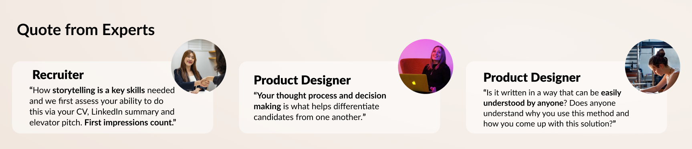

Overview
While I was learning coding, I decided to create my own portfolio website. I want to make a website not only visually appealing but also increase my chances of getting an interview.
It was challenging to create a website—from user research to actually coding the site. However, this was the most worthwhile project because I learned so many things, such as how a front-end developer works, how to analyse other websites using inspection and understanding what developers need from a designer when creating a product.
I conducted user testing with 5 individuals relevant to the UX industry. As a result, they all found it easy to navigate and liked the incorporation of visual elements that reflected my personality. I am excited to test my portfolio while applying for jobs.
Problem ü§î
You often see that almost 100 people apply for the same job on
LinkedIn within one week. If we consider people applying from
other platforms, how many individuals do you need to compete
against?
Applying for a job is not equivalent to securing one; it is one of
the stages through which individuals can land an interview and
progress towards obtaining a job. So,
how can we create a portfolio that stands out to hiring
managers or design teams, ensuring it won't be dismissed?
Solution üí°
- 1. Visual elements that showcase my unique personality and skills: Add visual elements such as emojis and pictures to convey my personality and highlight my visual design skills.
- 2. Differentiation: Include a category (e.g., App Design, Responsive Web Design, etc.) in the project picture, enabling hiring managers to easily recognise my experience and expertise.
- 3. Well-explained thought process: Include a result picture that provides context on why I made specific decisions, using annotations to help people understand easily.
- 4. Storytelling: Incorporate storytelling to explain my thought processes and design approach, following a user-cantered design methodology.
Do you want to know how I made this decision? üë©ü誂Äçüíª
First, as I identified a problem to solve, I started looking into how to make a portfolio that improves the chances of getting an interview. I reviewed other UX designers’ portfolios and talked with experts (6 senior UX designers and 1 recruiter) to understand what they think is crucial when reviewing portfolios.
Insight: While there isn’t a portfolio that guarantees employment, there are aspects that make you stand out to increase chances of getting an interview.
üîç Research: Find possible solutions
Upon analysing the data I gathered, I identified the most crucial aspects for an effective portfolio. Based on these findings, I came up with 2 HMW questions and solutions to have a clear goal.
HMW ü§î
"How might we create a unique portfolio so we can stand out to hiring managers?"
Solution üí°
Show your geek: By including pictures and design elements that naturally reflect your personality and strengths, you make it simple for employers to understand what sets you apart.
HMW ü§î
"How might we explain thought processes and design processes so everyone can understand the process?"
Solution üí°
Adding Intonation: Even with before-and-after images, identifying which part has been changed and why we changed is difficult. By adding intonation the result page, it helps individuals, including those with limited knowledge of UX design or those who skim-read, to understand the changes and the Why more easily.
✏️ Sketch: Visualise the ideas
I started to sketch them in order to visualise the design. I then moved to create a low-fi wireframe to make a layout of website.
Prototype: Decide the best solutions and create a high-prototype
I chose the best solutions that I wanted to improve and then began coding the website to ensure its responsiveness on all devices. It was difficult to code my prototype design as there were many things I actually couldn’t code such as carousel, drop down menu or accordion etc. Consequently, I had to consistently learn while creating the website, seeking guidance from my mentor to discuss whether it was possible to code certain elements. This experience deepened my understanding of Front-end developers' work and what is needed to code a prototype.
Coding: Create a real website
While coding my website, I found it challenging to remember details like the font I used, font size, margin, or spacing. If I made a design file to explain all of these, this could have saved time to create a coding.
User testing: Test with target users
I conducted user testing with 5 people, and they all found it easy to navigate. They liked the use of design elements that showcased my personality and design skills. However, there were suggestions for improvement in their feedback.
What I improved:
1. Change a profile picture to look more professional
2. Create a Contact Us page to users easily contact me
3. Add a result page with intonation so users can easily recognise the improvements and design decisions
4. Make the sentences shorter to enhance readability
5. Include a category (e.g., App Design, Responsive Web Design, etc.) in the project picture, enabling hiring managers to easily recognise my experience and expertise
What I Learnt üå±
Coding and Effective Communication with Developers: I learned how to code, and the most crucial lesson was understanding how to communicate effectively with developers. While coding my website, I found it challenging to remember details like the font I used, font size, margin, or spacing. If I made a design file to explain all of these, this could have saved time to create a coding. This experience underscored the importance of preparing a comprehensive handover file for a seamless translation of design into reality.
What aspects are the most important when it comes to a portfolio:
- Explaining Why about my thought process and ensuring it is understandable to anyone
- Problem-Solving Skills
- Data Analysis
- Visual Design
- Understanding of user-centred design principles
- Unique personality by using storytelling
Personally, I'm still working on explaining my design process in a way that's easy for anyone to understand and enjoyable to read. I aim to incorporate more visual elements, making it as straightforward and enjoyable as reading a comic book.
Next Steps ⏭️
Develop the portfolio website while actively applying for jobs. If you have any thoughts or feedback about my website, please feel free to send a message via LinkedIn or an email: Choa.linzy@gmail.com